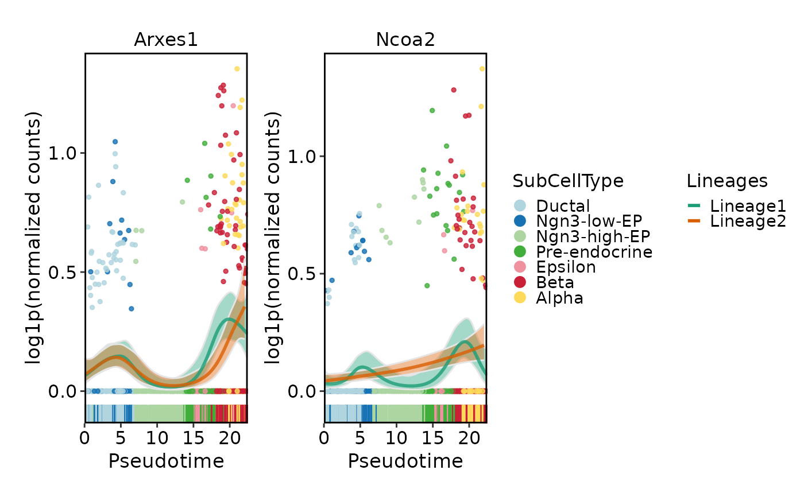
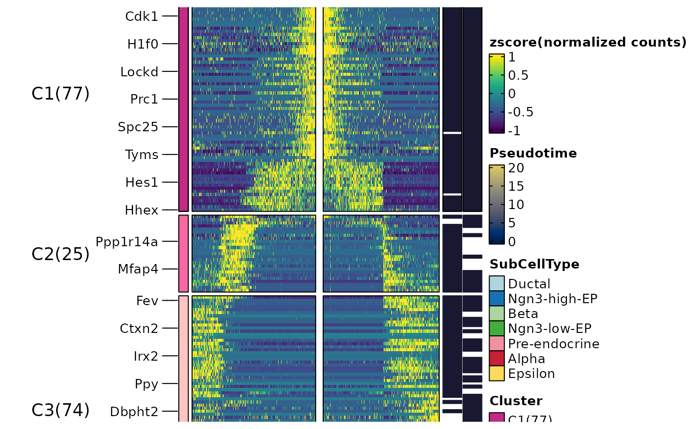

Calculates dynamic features for lineages
Usage
RunDynamicFeatures(
srt,
lineages,
features = NULL,
suffix = lineages,
n_candidates = 1000,
minfreq = 5,
family = NULL,
layer = "counts",
assay = NULL,
libsize = NULL,
fit_method = c("gam", "pretsa"),
knot = 0,
max_knot_allowed = 10,
padjust_method = "fdr",
cores = 1,
verbose = TRUE,
seed = 11
)Arguments
- srt
A Seurat object.
- lineages
A character vector specifying the lineage names for which dynamic features should be calculated.
- features
A character vector of features to use. If
NULL, n_candidates must be provided.- suffix
A character vector specifying the suffix to append to the output layer names for each lineage. Default is the lineage names.
- n_candidates
A number of candidate features to select when features is
NULL. Default is1000.- minfreq
An integer specifying the minimum frequency threshold for candidate features. Features with a frequency less than minfreq will be excluded. Default is
5.- family
A character or character vector specifying the family of distributions to use for the GAM. If family is set to NULL, the appropriate family will be automatically determined based on the data. If length(family) is 1, the same family will be used for all features. Otherwise, family must have the same length as features.
- layer
Which layer to use. Default is
"counts".- assay
Which assay to use. If
NULL, the default assay of the Seurat object will be used. When the object also containsChromatinAssay, the default assay and additionalChromatinAssaywill be preprocessed sequentially.- libsize
A numeric or numeric vector specifying the library size correction factors for each cell. If NULL, the library size correction factors will be calculated based on the expression matrix. If length(libsize) is 1, the same value will be used for all cells. Otherwise, libsize must have the same length as the number of cells in srt. Default is
NULL.- fit_method
The method used for fitting features. Either
"gam"(generalized additive models) or"pretsa"(Pattern recognition in Temporal and Spatial Analyses). Default is"gam".- knot
For
fit_method = "pretsa": B-spline knots.0or"auto". Default is0.- max_knot_allowed
For
fit_method = "pretsa"whenknot = "auto": max knots. Default is10.- padjust_method
The method used for p-value adjustment. Default is
"fdr".- cores
The number of cores to use for parallelization with foreach::foreach. Default is
1.- verbose
Whether to print the message. Default is
TRUE.- seed
Random seed for reproducibility. Default is
11.
Value
Returns the modified Seurat object with the calculated dynamic features stored in the tools slot.
References
Zhuang, H., Ji, Z. PreTSA: computationally efficient modeling of temporal and spatial gene expression patterns. Genome Biol (2026). https://doi.org/10.1186/s13059-026-03994-3
Examples
data(pancreas_sub)
pancreas_sub <- standard_scop(pancreas_sub)
#> ℹ [2026-06-28 05:01:56] Start standard processing workflow...
#> ℹ [2026-06-28 05:01:56] Checking a list of <Seurat>...
#> ! [2026-06-28 05:01:57] Data 1/1 of the `srt_list` is "unknown"
#> ℹ [2026-06-28 05:01:57] Perform `NormalizeData()` with `normalization.method = 'LogNormalize'` on 1/1 of `srt_list`...
#> ℹ [2026-06-28 05:01:57] Perform `FindVariableFeatures()` on 1/1 of `srt_list`...
#> ℹ [2026-06-28 05:01:57] Use the separate HVF from `srt_list`
#> ℹ [2026-06-28 05:01:57] Number of available HVF: 2000
#> ℹ [2026-06-28 05:01:57] Finished check
#> ℹ [2026-06-28 05:01:57] Perform `ScaleData()`
#> ℹ [2026-06-28 05:01:57] Perform pca linear dimension reduction
#> ℹ [2026-06-28 05:01:58] Use stored estimated dimensions 1:23 for Standardpca
#> ℹ [2026-06-28 05:01:58] Perform `Seurat::FindClusters()` with `cluster_algorithm = 'louvain'` and `cluster_resolution = 0.6`
#> ℹ [2026-06-28 05:01:58] Reorder clusters...
#> ℹ [2026-06-28 05:01:58] Skip `log1p()` because `layer = data` is not "counts"
#> ℹ [2026-06-28 05:01:58] Perform umap nonlinear dimension reduction
#> ✔ [2026-06-28 05:02:06] Standard processing workflow completed
pancreas_sub <- RunSlingshot(
pancreas_sub,
group.by = "SubCellType",
reduction = "UMAP"
)
#> Warning: Removed 14 rows containing missing values or values outside the scale range
#> (`geom_path()`).
#> Warning: Removed 14 rows containing missing values or values outside the scale range
#> (`geom_path()`).
 pancreas_sub <- RunDynamicFeatures(
pancreas_sub,
lineages = c("Lineage1", "Lineage2"),
n_candidates = 200,
fit_method = "gam"
)
#> ℹ [2026-06-28 05:02:08] Start find dynamic features
#> ℹ [2026-06-28 05:02:10] Data type is raw counts
#> ℹ [2026-06-28 05:02:11] Number of candidate features (union): 225
#> ℹ [2026-06-28 05:02:11] Data type is raw counts
#> ℹ [2026-06-28 05:02:11] Calculating dynamic features for "Lineage1"...
#> ℹ [2026-06-28 05:02:11] Using 1 core
#> ⠙ [2026-06-28 05:02:11] Running for Ghrl [1/225] 0% | ETA: 9s
#> ⠹ [2026-06-28 05:02:11] Running for Gadd45g [106/225] ■■■■ 47% | ETA: 3s
#> ⠸ [2026-06-28 05:02:11] Running for Tmsb15l [205/225] ■■■■■■■■■ 91% | ETA: 1s
#> ✔ [2026-06-28 05:02:11] Completed 225 tasks in 6.5s
#>
#> ℹ [2026-06-28 05:02:11] Building results
#> ℹ [2026-06-28 05:02:18] Calculating dynamic features for "Lineage2"...
#> ℹ [2026-06-28 05:02:18] Using 1 core
#> ⠙ [2026-06-28 05:02:18] Running for Mboat4 [76/225] ■■■ 34% | ETA: 5s
#> ⠹ [2026-06-28 05:02:18] Running for Kif22 [178/225] ■■■■■■■ 79% | ETA: 1s
#> ✔ [2026-06-28 05:02:18] Completed 225 tasks in 6.8s
#>
#> ℹ [2026-06-28 05:02:18] Building results
#> ✔ [2026-06-28 05:02:25] Find dynamic features done
names(
pancreas_sub@tools$DynamicFeatures_Lineage1
)
#> [1] "DynamicFeatures" "raw_matrix" "fitted_matrix" "upr_matrix"
#> [5] "lwr_matrix" "libsize" "lineages" "family"
head(
pancreas_sub@tools$DynamicFeatures_Lineage1$DynamicFeatures
)
#> features exp_ncells r.sq dev.expl peaktime valleytime pvalue padjust
#> Ghrl Ghrl 152 0.3596134 0.7120524 16.14971 8.92943246 0 0
#> Ins1 Ins1 194 0.6676216 0.8370493 22.37235 2.94027881 0 0
#> Ins2 Ins2 128 0.7983408 0.9320679 22.37235 0.03525427 0 0
#> Nnat Nnat 238 0.7666254 0.8470535 22.37235 5.58327857 0 0
#> Iapp Iapp 310 0.6970226 0.8604503 22.37235 0.03525427 0 0
#> Pyy Pyy 421 0.4148100 0.7831507 19.11470 9.09236613 0 0
ht <- DynamicHeatmap(
pancreas_sub,
lineages = c("Lineage1", "Lineage2"),
cell_annotation = "SubCellType",
n_split = 3,
reverse_ht = "Lineage1"
)
#> ℹ [2026-06-28 05:02:25] [1] 176 features from Lineage1,Lineage2 passed the threshold (exp_ncells>[1] 20 & r.sq>[1] 0.2 & dev.expl>[1] 0.2 & padjust<[1] 0.05):
#> ℹ Ghrl,Ins1,Ins2,Nnat,Iapp,Pyy,Lrpprc,Chgb,Cck,Slc38a5...
#> ℹ [2026-06-28 05:02:26]
#> ℹ The size of the heatmap is fixed because certain elements are not scalable.
#> ℹ The width and height of the heatmap are determined by the size of the current viewport.
#> ℹ If you want to have more control over the size, you can manually set the parameters 'width' and 'height'.
ht$plot
pancreas_sub <- RunDynamicFeatures(
pancreas_sub,
lineages = c("Lineage1", "Lineage2"),
n_candidates = 200,
fit_method = "gam"
)
#> ℹ [2026-06-28 05:02:08] Start find dynamic features
#> ℹ [2026-06-28 05:02:10] Data type is raw counts
#> ℹ [2026-06-28 05:02:11] Number of candidate features (union): 225
#> ℹ [2026-06-28 05:02:11] Data type is raw counts
#> ℹ [2026-06-28 05:02:11] Calculating dynamic features for "Lineage1"...
#> ℹ [2026-06-28 05:02:11] Using 1 core
#> ⠙ [2026-06-28 05:02:11] Running for Ghrl [1/225] 0% | ETA: 9s
#> ⠹ [2026-06-28 05:02:11] Running for Gadd45g [106/225] ■■■■ 47% | ETA: 3s
#> ⠸ [2026-06-28 05:02:11] Running for Tmsb15l [205/225] ■■■■■■■■■ 91% | ETA: 1s
#> ✔ [2026-06-28 05:02:11] Completed 225 tasks in 6.5s
#>
#> ℹ [2026-06-28 05:02:11] Building results
#> ℹ [2026-06-28 05:02:18] Calculating dynamic features for "Lineage2"...
#> ℹ [2026-06-28 05:02:18] Using 1 core
#> ⠙ [2026-06-28 05:02:18] Running for Mboat4 [76/225] ■■■ 34% | ETA: 5s
#> ⠹ [2026-06-28 05:02:18] Running for Kif22 [178/225] ■■■■■■■ 79% | ETA: 1s
#> ✔ [2026-06-28 05:02:18] Completed 225 tasks in 6.8s
#>
#> ℹ [2026-06-28 05:02:18] Building results
#> ✔ [2026-06-28 05:02:25] Find dynamic features done
names(
pancreas_sub@tools$DynamicFeatures_Lineage1
)
#> [1] "DynamicFeatures" "raw_matrix" "fitted_matrix" "upr_matrix"
#> [5] "lwr_matrix" "libsize" "lineages" "family"
head(
pancreas_sub@tools$DynamicFeatures_Lineage1$DynamicFeatures
)
#> features exp_ncells r.sq dev.expl peaktime valleytime pvalue padjust
#> Ghrl Ghrl 152 0.3596134 0.7120524 16.14971 8.92943246 0 0
#> Ins1 Ins1 194 0.6676216 0.8370493 22.37235 2.94027881 0 0
#> Ins2 Ins2 128 0.7983408 0.9320679 22.37235 0.03525427 0 0
#> Nnat Nnat 238 0.7666254 0.8470535 22.37235 5.58327857 0 0
#> Iapp Iapp 310 0.6970226 0.8604503 22.37235 0.03525427 0 0
#> Pyy Pyy 421 0.4148100 0.7831507 19.11470 9.09236613 0 0
ht <- DynamicHeatmap(
pancreas_sub,
lineages = c("Lineage1", "Lineage2"),
cell_annotation = "SubCellType",
n_split = 3,
reverse_ht = "Lineage1"
)
#> ℹ [2026-06-28 05:02:25] [1] 176 features from Lineage1,Lineage2 passed the threshold (exp_ncells>[1] 20 & r.sq>[1] 0.2 & dev.expl>[1] 0.2 & padjust<[1] 0.05):
#> ℹ Ghrl,Ins1,Ins2,Nnat,Iapp,Pyy,Lrpprc,Chgb,Cck,Slc38a5...
#> ℹ [2026-06-28 05:02:26]
#> ℹ The size of the heatmap is fixed because certain elements are not scalable.
#> ℹ The width and height of the heatmap are determined by the size of the current viewport.
#> ℹ If you want to have more control over the size, you can manually set the parameters 'width' and 'height'.
ht$plot
 DynamicPlot(
pancreas_sub,
lineages = c("Lineage1", "Lineage2"),
features = c("Arxes1", "Ncoa2"),
group.by = "SubCellType",
compare_lineages = TRUE,
compare_features = FALSE
)
#> ℹ [2026-06-28 05:02:28] Start find dynamic features
#> ℹ [2026-06-28 05:02:29] Data type is raw counts
#> ℹ [2026-06-28 05:02:30] Number of candidate features (union): 2
#> ℹ [2026-06-28 05:02:30] Data type is raw counts
#> ℹ [2026-06-28 05:02:30] Calculating dynamic features for "Lineage1"...
#> ℹ [2026-06-28 05:02:30] Using 1 core
#> ⠙ [2026-06-28 05:02:30] Running for Arxes1 [1/2] ■■■■■ 50% | ETA: 0s
#> ✔ [2026-06-28 05:02:30] Completed 2 tasks in 127ms
#>
#> ℹ [2026-06-28 05:02:30] Building results
#> ✔ [2026-06-28 05:02:30] Find dynamic features done
#> ℹ [2026-06-28 05:02:30] Start find dynamic features
#> ℹ [2026-06-28 05:02:32] Data type is raw counts
#> ℹ [2026-06-28 05:02:32] Number of candidate features (union): 2
#> ℹ [2026-06-28 05:02:33] Data type is raw counts
#> ℹ [2026-06-28 05:02:33] Calculating dynamic features for "Lineage2"...
#> ℹ [2026-06-28 05:02:33] Using 1 core
#> ⠙ [2026-06-28 05:02:33] Running for Arxes1 [1/2] ■■■■■ 50% | ETA: 0s
#> ✔ [2026-06-28 05:02:33] Completed 2 tasks in 223ms
#>
#> ℹ [2026-06-28 05:02:33] Building results
#> ✔ [2026-06-28 05:02:33] Find dynamic features done
#> Warning: No shared levels found between `names(values)` of the manual scale and the
#> data's fill values.
#> Warning: No shared levels found between `names(values)` of the manual scale and the
#> data's fill values.
#> Warning: No shared levels found between `names(values)` of the manual scale and the
#> data's fill values.
DynamicPlot(
pancreas_sub,
lineages = c("Lineage1", "Lineage2"),
features = c("Arxes1", "Ncoa2"),
group.by = "SubCellType",
compare_lineages = TRUE,
compare_features = FALSE
)
#> ℹ [2026-06-28 05:02:28] Start find dynamic features
#> ℹ [2026-06-28 05:02:29] Data type is raw counts
#> ℹ [2026-06-28 05:02:30] Number of candidate features (union): 2
#> ℹ [2026-06-28 05:02:30] Data type is raw counts
#> ℹ [2026-06-28 05:02:30] Calculating dynamic features for "Lineage1"...
#> ℹ [2026-06-28 05:02:30] Using 1 core
#> ⠙ [2026-06-28 05:02:30] Running for Arxes1 [1/2] ■■■■■ 50% | ETA: 0s
#> ✔ [2026-06-28 05:02:30] Completed 2 tasks in 127ms
#>
#> ℹ [2026-06-28 05:02:30] Building results
#> ✔ [2026-06-28 05:02:30] Find dynamic features done
#> ℹ [2026-06-28 05:02:30] Start find dynamic features
#> ℹ [2026-06-28 05:02:32] Data type is raw counts
#> ℹ [2026-06-28 05:02:32] Number of candidate features (union): 2
#> ℹ [2026-06-28 05:02:33] Data type is raw counts
#> ℹ [2026-06-28 05:02:33] Calculating dynamic features for "Lineage2"...
#> ℹ [2026-06-28 05:02:33] Using 1 core
#> ⠙ [2026-06-28 05:02:33] Running for Arxes1 [1/2] ■■■■■ 50% | ETA: 0s
#> ✔ [2026-06-28 05:02:33] Completed 2 tasks in 223ms
#>
#> ℹ [2026-06-28 05:02:33] Building results
#> ✔ [2026-06-28 05:02:33] Find dynamic features done
#> Warning: No shared levels found between `names(values)` of the manual scale and the
#> data's fill values.
#> Warning: No shared levels found between `names(values)` of the manual scale and the
#> data's fill values.
#> Warning: No shared levels found between `names(values)` of the manual scale and the
#> data's fill values.

pancreas_sub <- RunDynamicFeatures(
pancreas_sub,
lineages = c("Lineage1", "Lineage2"),
n_candidates = 200,
fit_method = "pretsa"
)
#> ℹ [2026-06-28 05:02:34] Start find dynamic features
#> ℹ [2026-06-28 05:02:35] Data type is raw counts
#> ℹ [2026-06-28 05:02:36] Number of candidate features (union): 225
#> ℹ [2026-06-28 05:02:36] Data type is raw counts
#> ℹ [2026-06-28 05:02:37] Calculating dynamic features for "Lineage1"...
#> ℹ [2026-06-28 05:02:37] Calculating dynamic features for "Lineage2"...
#> ✔ [2026-06-28 05:02:37] Find dynamic features done
head(
pancreas_sub@tools$DynamicFeatures_Lineage1$DynamicFeatures
)
#> features exp_ncells r.sq dev.expl peaktime valleytime pvalue
#> Ghrl Ghrl 152 0.1768404 0.1768404 16.10426 22.37234838 5.167281e-28
#> Ins1 Ins1 194 0.7009764 0.7009764 22.37235 12.66106230 1.329101e-174
#> Ins2 Ins2 128 0.8568251 0.8568251 22.37235 12.57868719 2.192306e-281
#> Nnat Nnat 238 0.8100130 0.8100130 22.37235 11.55400183 2.306550e-240
#> Iapp Iapp 310 0.8724485 0.8724485 22.37235 0.03525427 3.839856e-298
#> Pyy Pyy 421 0.6850790 0.6850790 22.37235 5.07400091 4.288764e-167
#> padjust
#> Ghrl 7.549599e-28
#> Ins1 1.246032e-173
#> Ins2 1.644230e-279
#> Nnat 7.413910e-239
#> Iapp 4.319838e-296
#> Pyy 3.216573e-166
ht <- DynamicHeatmap(
pancreas_sub,
lineages = c("Lineage1", "Lineage2"),
cell_annotation = "SubCellType",
n_split = 3,
reverse_ht = "Lineage1"
)
#> ℹ [2026-06-28 05:02:37] [1] 164 features from Lineage1,Lineage2 passed the threshold (exp_ncells>[1] 20 & r.sq>[1] 0.2 & dev.expl>[1] 0.2 & padjust<[1] 0.05):
#> ℹ Ins1,Ins2,Nnat,Iapp,Pyy,Lrpprc,Chgb,Cck,Slc38a5,Npy...
#> ℹ [2026-06-28 05:02:38]
#> ℹ The size of the heatmap is fixed because certain elements are not scalable.
#> ℹ The width and height of the heatmap are determined by the size of the current viewport.
#> ℹ If you want to have more control over the size, you can manually set the parameters 'width' and 'height'.
ht$plot

DynamicPlot(
pancreas_sub,
lineages = c("Lineage1", "Lineage2"),
features = c("Arxes1", "Ncoa2"),
group.by = "SubCellType",
compare_lineages = TRUE,
compare_features = FALSE
)
#> ℹ [2026-06-28 05:02:40] Start find dynamic features
#> ℹ [2026-06-28 05:02:42] Data type is raw counts
#> ℹ [2026-06-28 05:02:42] Number of candidate features (union): 2
#> ℹ [2026-06-28 05:02:42] Data type is raw counts
#> ℹ [2026-06-28 05:02:43] Calculating dynamic features for "Lineage1"...
#> ℹ [2026-06-28 05:02:43] Using 1 core
#> ⠙ [2026-06-28 05:02:43] Running for Arxes1 [1/2] ■■■■■ 50% | ETA: 0s
#> ✔ [2026-06-28 05:02:43] Completed 2 tasks in 130ms
#>
#> ℹ [2026-06-28 05:02:43] Building results
#> ✔ [2026-06-28 05:02:43] Find dynamic features done
#> ℹ [2026-06-28 05:02:43] Start find dynamic features
#> ℹ [2026-06-28 05:02:44] Data type is raw counts
#> ℹ [2026-06-28 05:02:45] Number of candidate features (union): 2
#> ℹ [2026-06-28 05:02:45] Data type is raw counts
#> ℹ [2026-06-28 05:02:45] Calculating dynamic features for "Lineage2"...
#> ℹ [2026-06-28 05:02:45] Using 1 core
#> ⠙ [2026-06-28 05:02:45] Running for Arxes1 [1/2] ■■■■■ 50% | ETA: 0s
#> ✔ [2026-06-28 05:02:45] Completed 2 tasks in 136ms
#>
#> ℹ [2026-06-28 05:02:45] Building results
#> ✔ [2026-06-28 05:02:45] Find dynamic features done
#> Warning: No shared levels found between `names(values)` of the manual scale and the
#> data's fill values.
#> Warning: No shared levels found between `names(values)` of the manual scale and the
#> data's fill values.
#> Warning: No shared levels found between `names(values)` of the manual scale and the
#> data's fill values.